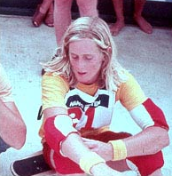

Não se sabe ao certo do quê surgiu o skate, mas muitos falam que vieram do surf; outros de patins quebrados, que com suas partes se montavam um skate em um pedaço de madeira.
Década de 1960
No início da década de 1960, os surfistas da Califórnia mais ou menos na cidade de Los Angeles queriam fazer das pranchas um divertimento também nas ruas, em uma época de marés baixas e secas na região. Inicialmente, a nova "maneira de surfar" foi chamada de sidewalk surfing. Em 1965, surgiram os primeiros campeonatos, mas o skate só ficou mais reconhecido uma década depois.[15]

Década de 1970
Em 1973, o norte-americano Frank Nasworthy inventou as rodinhas de uretano, que revolucionaram o esporte. Um skate passou a pesar por volta de 1,5 kg.
Por volta do ano 1975, um grupo de garotos revolucionou ainda mais o skate, realizando manobras do surf sobre ele. Esses garotos eram os lendários Z-Boys da também lendária equipe Zephyr. Essa equipe era de Venice, Califórnia, lugar o qual chamavam de Dogtown.
"Em 1976, nós andávamos de skate em piscinas vazias. Ninguém sabia o tudo o que se podiam fazer então nós nos divertíamos e víamos até onde podíamos forçar"
Década de 1980
Na década de 1980, um dos revolucionários do esporte, principalmente na modalidade street, foi Rodney Mullen. Mullen desenvolveu várias manobras, como o kickflip, heelflip, hardflip, casper, darkslide, rockslide, 50-50, body varial, nollie flip underflip, primo, reemo, varial flip, inward heelflip, 360 flip, FS flip, BS flip, varial heelflip, FS heelflip, BS heelflip, etc. Grande parte das manobras atualmente praticadas é derivada dessas manobras. Rodney foi, por diversas vezes, vice campeão, chegando a ser considerado o melhor e mais influente skatista do bairro na sua modalidade.[16] Outro revolucionário, na modalidade street, foi Tony Hawk. Hawk inovou a maneira como os skatistas devem abordar o half-pipe, sempre procurando ultrapassar os limites de criatividade e dificuldade de execução das manobras. No final dos anos 1982, mais exatamente em 1983, Lincoln Ueda, assistido pelo seu pai (que filmava suas voltas para que pudessem aprimorá-las), competiu em Münster, na Alemanha, e faturou o 15° lugar. Despontava o Brasil no cenário mundial. Ueda também teve excelentes participações na pista da Domínio Skate Park Atibaia.
Década de 1990
Nos anos 1990, o carioca Bob Burnquist[17] elaborou a última grande revolução no skate: o switchstance vertical. Essa é a técnica de andar na base oposta à que se tem maior facilidade. Já era difundida na modalidade street, mas Bob foi o primeiro a popularizá-la na modalidade vertical. A partir daí, o skate passou a não ter mais "lado", ou seja, não existe mais o lado da frente nem o lado de trás. As manobras realizadas com pé direito na frente do skate agora também são realizadas com o pé esquerdo na frente. Essa técnica quadruplicou o número de variações possíveis nas manobras. Para um skatista que deseja competir, é imprescindível o domínio de tal técnica. Bob foi o primeiro skatista brasileiro a vencer uma etapa do campeonato mundial de skate vertical, em Vancouver, no Canadá, no ano de 1995. Ninguém esperava, ele apareceu lá e mostrou como se deveria andar de skate vertical dali em diante.
Década de 2000
fundada em São Paulo a Associação Brasileira de Skate Feminino, por skatistas femininas, seu primeiro circuito ocorreu em 2005. Hoje, a associação é filiada à CBSk.